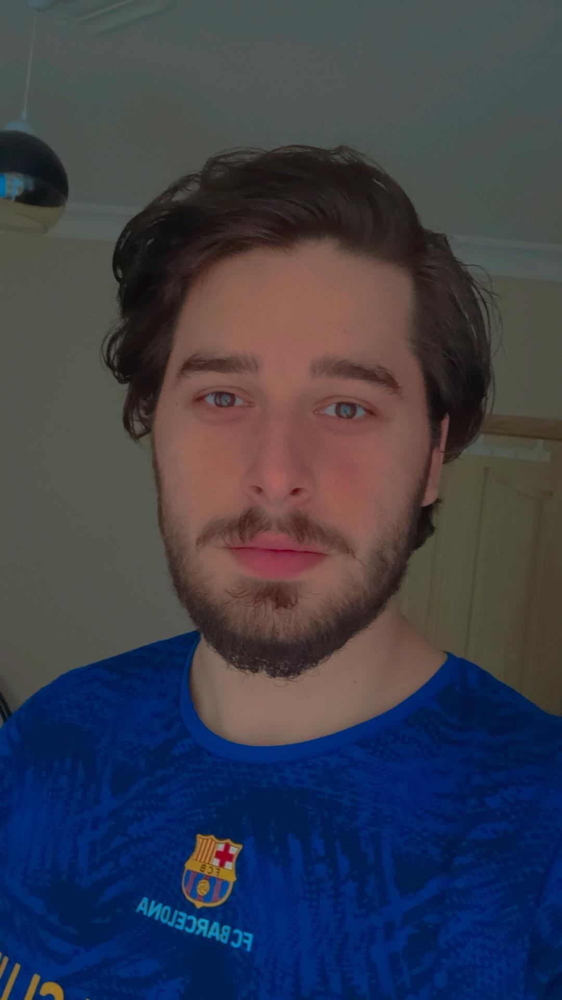

Özhan Mert Fidan

Summary
I am a hardworking and dedicated individual with experience in translating and teaching English.
Education
Work Experience
- Private English Teacher
March 2021- Present
- Taught the basis and grammar of English to Turkish kids.
- Helped them to speak more fluently.
- Students had fun while learning.
Skills
- C1 level of English
- A1 level of German
- Interactive teaching
- English - Turkish translation
Other